ESPECIFICACIONES
- Esta pagina incluye en los resultados un 5% de desperdicio.
- Los datos deben ingresarse en cm. 1m = 100cm.
- Esta pagina utiliza como referencia ladrillos huecos no portantes de 33cm de largo, 18cm de alto y 12cm de ancho, y los ladrillos de adobe de son de 40cm de largo 20cm de ancho y 10cm de alto.
- La dosificacion es la proporcion de material que utiliza la mezcla. Ej: en una dosificacion de 1:3 se necesitan 3kg de arena por cada 1kg de cemento.
- m2: Se refiere al ancho multiplicado por el largo del ambiente/habitacion.
- El area es la extension de la superfiecie a cubrir.
- En el apartado revoque se informa de los materiales necesarios para el revoque fino y grueso, ambos por separado.
- La grava es lo mismo que la piedra.
INFORMACION GENERAL
Pared:
Esta calculadora está diseñada para usar ladrillos huecos no portantes de
33 cm x 18 cm x 12 cm y los ladrillos de adobe
tienen medidas de
40 cm x 20 cm x 10 cm.
Las medidas se leen de esta manera: (largo x ancho x alto) pero por si tiene alguna duda aqui le dejamos unas imagenes de
los ladrillos que utilizamos:
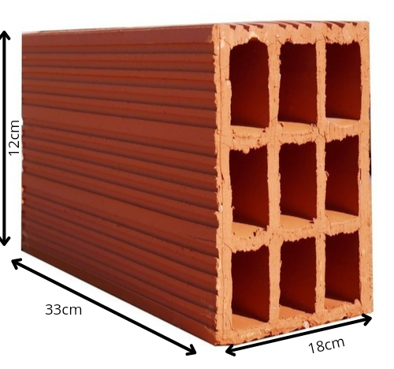
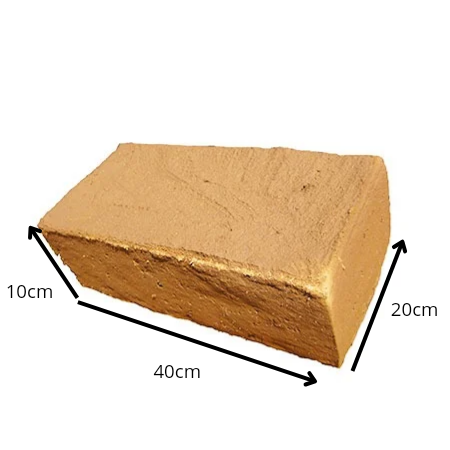
Estos fierros son los que se utilizan para los encadenados, que se rellenan con mortero u hormigon:
Los fierros de 3/8 pulgadas se usan para los encadenados horizontales y para cimentacion, mientras que los fierros de 6mm se utilizan para los encadenados verticales o columnas.
Cimiento
Se utiliza una dosificacion de 1:2:2 (1 parte de cemento, 2 de arena y 2 de piedra) para la mezcla del hormigon, mientras que el concreto usa una dosificacion de 1:2:3 (1 parte de cemento, 2 de arena y 3 de piedra)
Esta calculadora utiliza un ancho de cimiento predeterminado de 0.40 m.
El hormigón es un material de construcción hecho con cemento, arena y
grava/piedra. Es uno de los materiales más utilizados en obras de arquitectura e ingeniería ya que es fundamental porque cuenta con alta maleabilidad, gran consistencia, bajo coste y rápido secado.
El concreto esta compuesto de los mismos materiales, pero tiene una resistencia aun mayor que la del hormigon.
Teniendo en cuenta esto, la opción mas economica es el hormigon.
Revoque
El revoque es un revestimiento exterior o interior de mortero de cemento que se aplica como
acabado a una pared que ya ha sido enfoscado/tarrajeado previamente.Su fin es mejorar el aspecto y las características de las superficies de paredes.
Hay 2 tipos de revoques: uno es el interior o fino y el otro es
el exterior o grueso. El revoque interior/fino usa una dosificacion de 1:4(cemento,arena) mientras que el exterior/grueso usa una dosificacion de 1:3 (cemento,arena). Se aplica primero el revoque grueso, luego el fino para darle un correcto acabado a la pared.
El tarrajeo utiliza una dosificación de 1:3 (cemento,arena)
Techo
La losa aligerada utiliza ladrillos de 30 cm x 30 cm x 11 cm y al igual que los ladrillos usados en la pared se lee de esta manera: (largo x ancho x alto)
INFORMACION EXTRA
Arena: La arena es un material fundamental para la dosificacion del mortero.
Hay 2 tipos de arena: la arena fina y la gruesa.
Arena fina: Se suele utilizar para la ultima capa de acabado.
Arena gruesa: se suele usar para colocar ladrillos, bloques de hormigón y cargar paredes.
El cemento:es un material de construcción esencial ya que es el más utilizado en el mundo.Se emplea en varias etapas de la construccion, tales como: cimientos, suelos, contrapisos,paredes o techos.
La piedra/grava al igual que la arena y el cemento es un material sumamente importante para
la construccion. por un lado, facilita la integración de los materiales, y por otro, da consistencia y resistencia a las mezclas que forman.
Paso 1
Ingresa las medidas de la pared como ancho, largo y alto,El grafico en la parte derecha lo guiara por si tiene alguna duda.
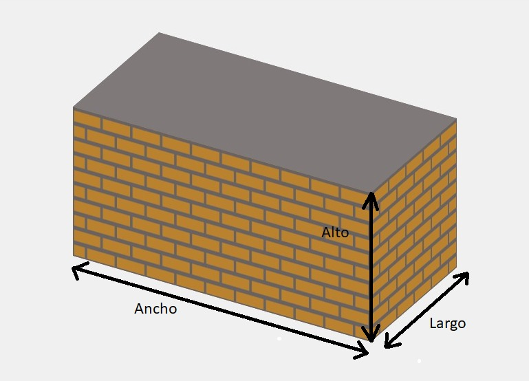
Paso 2
Usted debera elegir entre el ladrillo hueco y de adobe.
El ladrillo hueco está hecho de cerámica, y se utilizan para hacer paredes que dividen espacios y que pueden llegar a soportar la carga de algunos elementos estructurales.
Existen 2 tipos de ladrillos huecos: los portantes y los no portantes.
Los ladrillos portantes son los que fueron hechos para soportar cargas y dividir diferentes espacios.
Este tipo de ladrillo tiene los huecos orientados de manera vertical para poder resistir las cargas. Y luego estan los no portantes que están pensados solamente para dividir espacios, es decir, que no son aptos para soportar cargas.
Estos ladrillos son muy utilizados en proyectos cuya estructura es independiente y son ideales para paredes.
El ladrillo comun o de adobe, se utiliza para realizar varios proyectos de construcción, desde casas hasta edificios.
Son adecuados para construcciones tradicionales o proyectos más económicos.
En la seccion de ESPECIFICACIONES encontrara que tipo de ladrillos usamos en la calculadora.
Paso 3
En este paso usted debera elegir si desea añadir aberturas. Estas aberturas representan las aberturas que usted colocara en las paredes y afecta directamente en el calculo de la pared. En la misma calculadora esta indicado a que se refiere cada medida. Este paso es opcional,por lo que no necesita completarse.

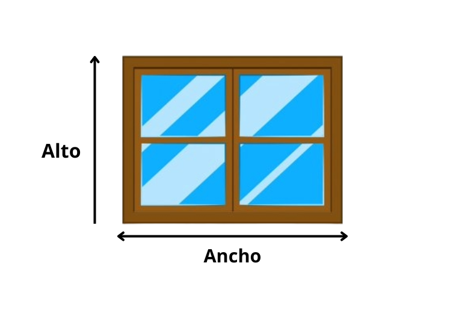
Paso 4
Para el mortero, se recomienda una dosificación de 1:3 (1 parte de cemento por 3 de arena) o 1:4 (1 parte de cemento por 4 de arena). La dosificación 1:3 es ideal para mampostería simple y el pegado de ladrillos, mientras que la 1:4 es un poco menos consistente pero cumple el mismo propósito.
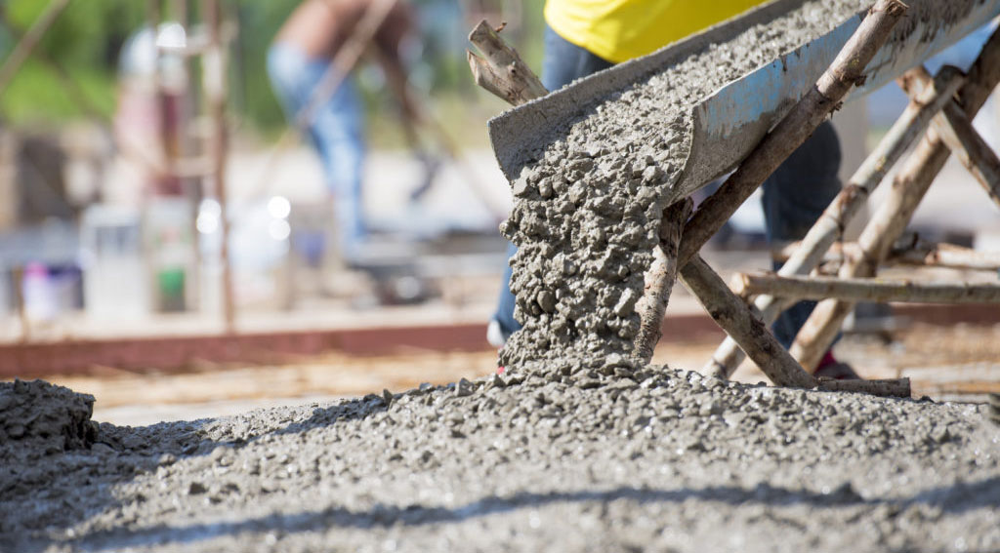
Paso 4
los encadenados son fundamentales para la estructura de la pared.Es lo que nos va a permitir vincular todas las columnas con el perímetro superior de la construcción,
dejando una superficie resistente para poder colocar una futura losa. En la seccion ESPECIFICACIONES veras que tipo de fierros usamos para los encadenados en esta página.
Paso 1
Ingresa las medidas de su Cimiento como ancho, largo y profundoLa imagen a su derecha lo guiara por si tiene alguna duda.
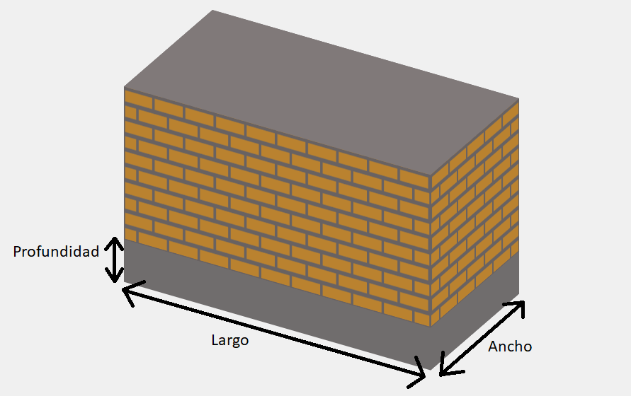
Paso 2
Ahora tiene que elegir un tipo de cimiento. Los cimientos corridos son un tipo de cimentación que se usan para la construcción de una vivienda estructurada con muros portantes de albañilería.
La zapata corrida es un tipo de cimentación poco profunda que recibe la carga de los muros y se apoya directamente en el suelo. Se utilizan cuando hay presencia de una carga distribuida linealmente por la cimentación, por lo que se utilizan para soportar las cargas procedentes de muros y paredes.
Ambas distribuyen el peso y soportan las contracciones y cambios de temperatura de la construccion, por los que son muy importantes para que el ambiente resista.
Estos 2 tipos de cimientos son los que utiliza la página.
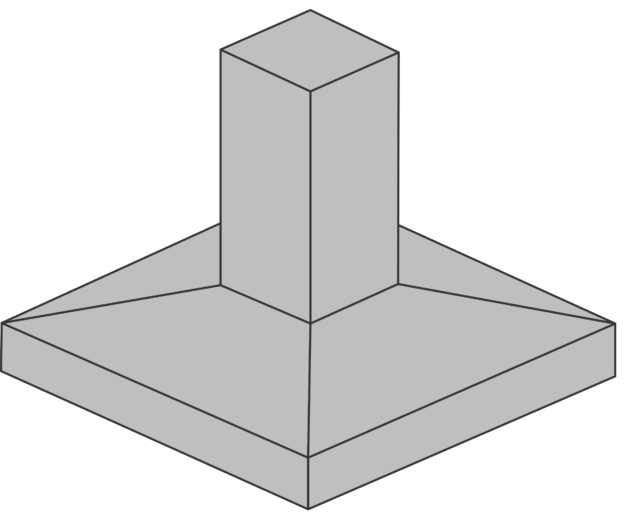
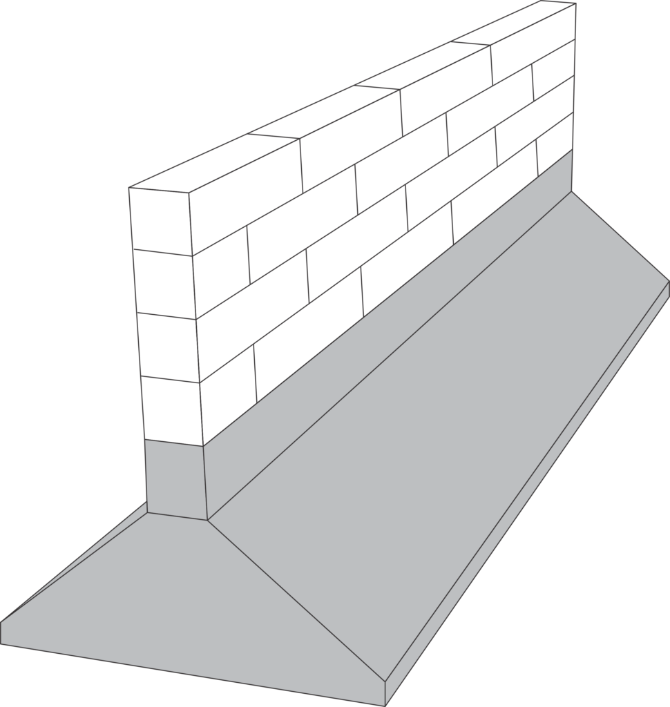
Paso 3
Por último debe elegir con que material desea rellenar el cimiento, con hormigon o concreto. Consulte nuestra seccion de ESPECIFICACIONES para conocer que
dosificación utilizamos en ambos materiales ademas de una breve descripcion de ambos materiales.
Paso 1
Ingresa las medidas del Contrapiso como ancho, largo y Alto,guiandose por la imagen que se presentara a su derecha en la calculadora.
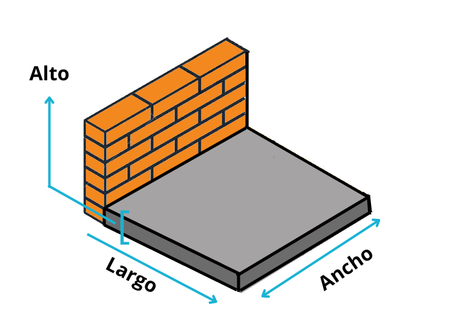
Paso 2
A continuación usted debera ingresar las medidas de sus ceramicos para poder procesarlos en la calculadora. Por lo general los ceramicos son cuadrados, pero podra elegir el largo y ancho a gusto.
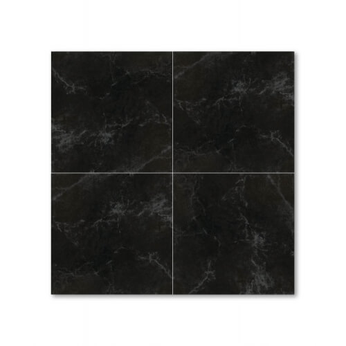
Paso 3
En este paso debera elegir si desea rellenar el cimiento con hormigon o con concreto. Consulte nuestra seccion de ESPECIFICACIONES para conocer que
dosificación utilizamos en ambos materiales, ademas de una breve descripcion de ambos materiales.
Paso 1
Ingresa las medidas del Revoque como ancho, largo y alto del mismo guiandose por la imagen que se presentara a su derecha en la calculadora.
Paso 2
Ahora es turno del tarrajeo o enfoscado, que es una capa de mortero que se aplica para emparejar y "corregir" la pared. Esto es opcional, pero es muy recomendable incluirlo.
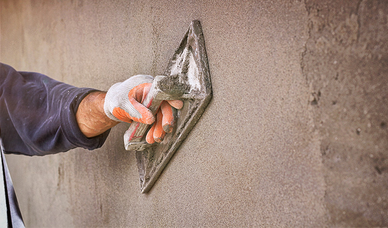
Paso 3
En este paso usted debera elegir si desea añadir aberturas.Estas aberturas representan las aberturas que usted colocara en las paredes y afecta directamente en el calculo del revoque.En la misma calculadora esta indicado a que se refiere cada medida. Este paso es opcional,por lo que no necesita completarse.
En el apartado de ESPECIFICACIONES encontrara información sobre el revoque interior y exterior, ademas del tarrajeo y las dosificaciones de cada uno.
Paso 1
Ingresa las medidas de su techo como el ancho, el largo y el alto del mismo guiandose por la imagen que se presentara a su derecha en la calculadora.
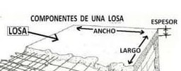
Paso 2
En este paso se eligira que tipo de techo va a querer para su construccion. En esta pagina existen 2 tipos de techo: la losa aligerada y la losa maciza.
Las losas aligeradas son elementos esenciales en la construcción por su ligereza y resistencia a sismos, ideales para superficies planas y eficientes en la transmisión de cargas. Por otro lado, la losa maciza, hecha de hormigón, proporciona una base sólida para edificaciones de mayor escala. Aunque la losa aligerada es más económica, ambas opciones se colocan sobre vigas que distribuyen las cargas en las paredes.
en la parte inferior podra ver en la primer imagen una loza aligerada y en la segunda imagen una loza maciza.
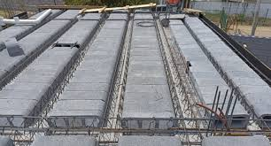
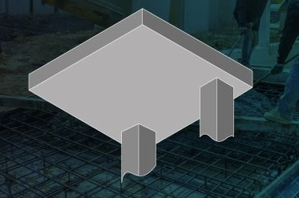